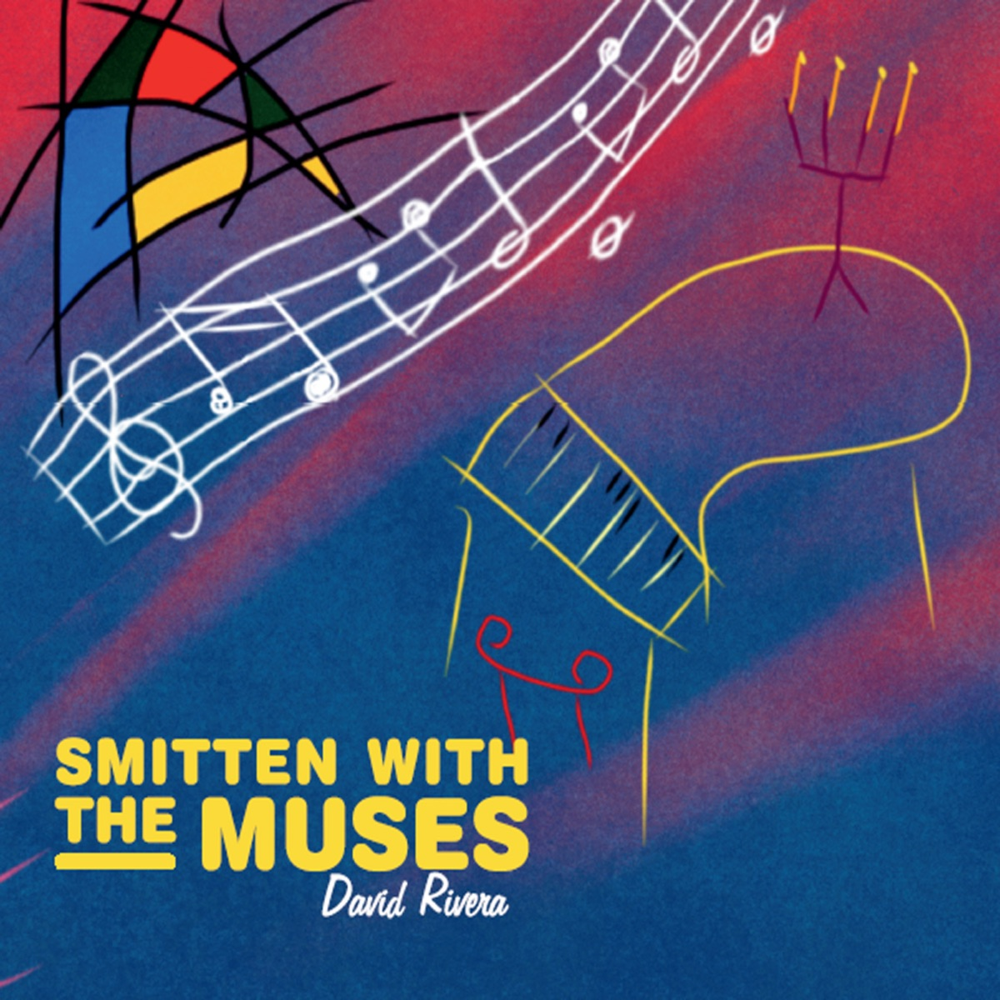

Smitten with the Muses
2014 · piano
Sixteen pieces for the days the muses stay. A beguiling dance, a loquacious daydream, pure freedom. Tranquil Wisdom is the short one that still holds a scene.
I’m David Rivera. American neoclassical composer. Seven piano and ambient albums that fuse minimalism and electronica. The music is piano at heart. Subtle melodies for overlooked moments, sometimes with ethereal instruments, vocals, or synths. Piano music by David Rivera, American composer.
I’m back at the instrument. Stay with the muses for now. New music is on the way. Keep an ear out.
This page is only this album. If you want the album, press listen above.
The pieces
- Flowing Spontaneity4:14
- Flying Freedom3:41
- Beguiling Dance3:25
- Tranquil Wisdom2:44
- Pure Intentions2:35
- Searching Truth2:42
- Cautious Belief3:22
- Unforgettable Disquiet2:50
- Playful Trek3:58
- Happy Reawakening3:10
- Loquacious Daydream9:47
- Loony Joyfulness2:02
- Indelible Memory2:24
- Fantastical Present4:47
- Dark Divinity6:25
- Pure Freedom3:16
The other albums
- Melodic Subtlety – Piano (2006) · minimalist piano
- Piano In Colors (2007) · expressive neoclassical
- Tantalizing Proof (2009) · quiet, insistent piano
- Clean Calm Piano (2010) · intimate piano
- Where In The World Is Diane (2012) · travel-inspired piano
- Piano Reveries and Phantasies (2015) · contemplative works
- Lackadaisical Perfection (2027) · neoclassical piano
New work